缘起
未完待续
埃及字母表（代前言）
A i y a w b p f m n r h H x X z s S q k g t T d D W M N R K l j
A i y a w b p f m n r h H x X z s S q k g t T d D W M N R K l j
A i y a w b p f m n r h H x X z s S q k g t T d D W M N R K l j
很多象形皆会上色，但长年累月下颜料会从石刻上流走。不同石刻的颜色也会有所差异，但通常而言都会选择同一种颜色又或同一种组合。某些情况下两个相似的象形文字只能靠颜色来分辨，但亦有情况研究并不清楚颜色是否有意义。
| 字母 | 僧侣体 | 转写 | 象形 | 圣书体 | 彩图 | 颜色 | 描述 | 读法 | 附注 | 上古音 | 中古音 |
|---|---|---|---|---|---|---|---|---|---|---|---|
| A | A | A | A | G001 𓄿 |
 |
多色 | 白兀鹫 | /ɑː/ | 希伯来字母א阿拉伯字母 أ |
l或ɾ | 静音、j或ʔ |
| i | i | i | i | M017 𓇋 |
 |
绿 | 开花的芦苇 | /ɑː, iː/ | 希伯来字母י阿拉伯字母 ي |
j或ʔ | |
| y | y | y | y | M017A 𓇌 |
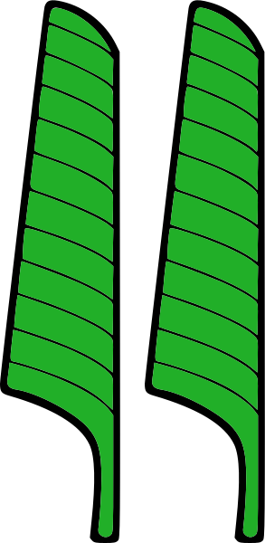 | 绿 | 一双芦苇 | /j, iː/ | 无 | j | |
| j | j | j | j | Z004 𓏭 |
 |
蓝 | 平行线？ | /j, iː/ | |||
| a | a | a | a | D036 𓂝 |
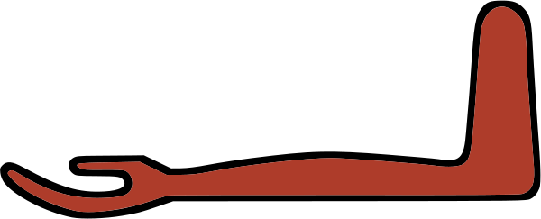 | 红 | 前臂 | /ɑː/ | 希伯来字母ע阿拉伯字母 ع |
可能d | ʕ，偶尔d |
| w | w | w | w | G043 𓅱 |
 |
黄 | 初生鹌鹑 | /w, uː/ | w ~ u | ||
| W | W | W | W | Z007 𓏲 |
 |
黄 | 螺旋 | /w, uː/ | |||
| b | b | b | b | D058 𓃀 |
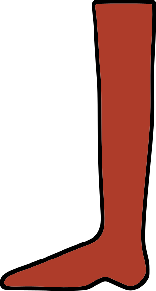 | 红 | 下腿 | /b/ | b ~ β | ||
| p | p | p | p | Q003 𓊪 |
 |
绿 | 芦苇席 | /p/ | pʰ | ||
| f | f | f | f | I009 𓆑 |
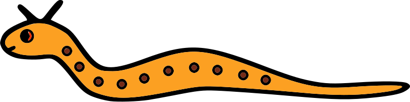 | 黄 | 角蝰 | /f/ | f | ||
| m | m | m | m | G017 𓅓 |
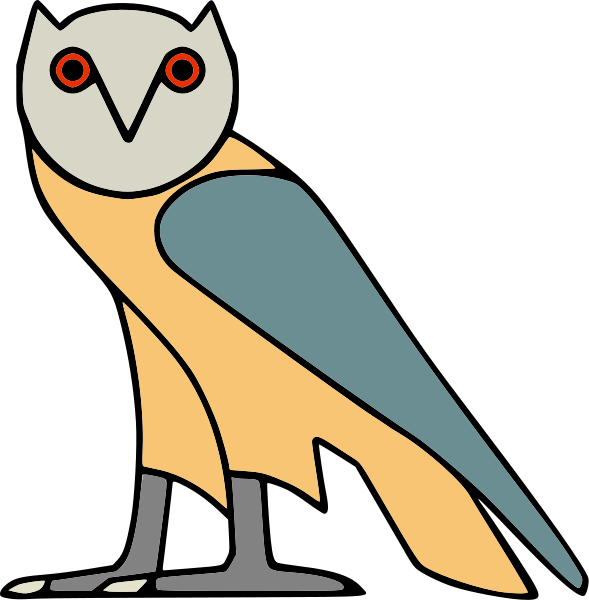 | 黄 | 猫头鹰 | /m/ | m | ||
| n | n | n | n | N035 𓈖 |
 |
黑 | 水波 | /n/ | n | n，有时l | |
| r | r | r | r | D021 𓂋 |
红 | 人嘴 | /r/ | l或ɾ | ɾ，有时l | ||
| h | h | h | h | O004 𓉔 |
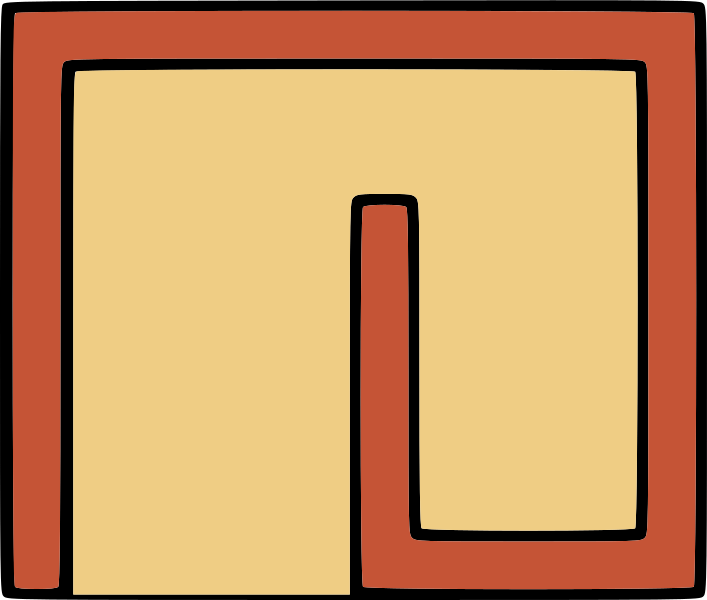 | 蓝 | 芦苇屏障 | /h/ | 希伯来字母ה阿拉伯字母 ه |
h | |
| H | H | H | H | V028 𓎛 |
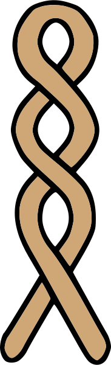 | 绿 | 灯芯 | /h/ | 阿拉伯字母ح |
ħ | |
| x | x | x | x | AA001 𓐍 |
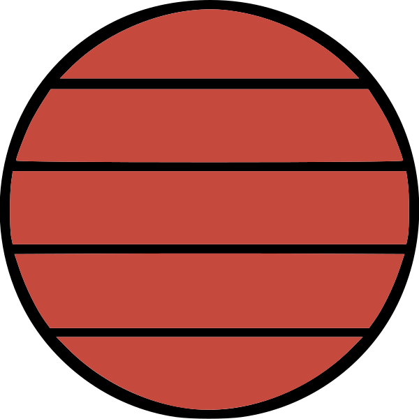 | 绿 | 筛 | /x/ | 阿拉伯字母خ |
x | |
| X | X | X | X | F032 𓄡 |
 |
多色 | 动物身体与尾巴 | /x/ | ç | ||
| z | z | z | z | O034 𓊃 |
红 | 门闩 | /s/ | 不明，可能z、 t͡s、sʼ或θ |
s | ||
| s | s | s | s | S029 𓋴 |
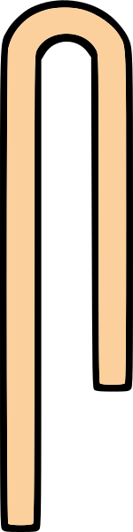 | 红 | 折起来的衣服 | /s/ | s | ||
| S | S | S | S | N037/N037A/N038/N039 𓈙𓈚 𓈛𓈜 |
 |
蓝 | 花园水池 | /ʃ/ | ʃ | ||
| q | q | q | q | N029 𓈎 |
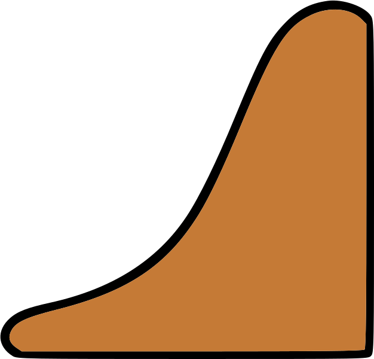 | 蓝 | 山坡 | /k/ | 希伯来字母ק阿拉伯字母 ق |
qʼ | |
| k | k | k | k | V031/V031A 𓎡𓎢 |
 |
绿 | 有手抽的篮 | /k/ | 希伯来字母כ阿拉伯字母 ك |
kʰ | |
| g | g | g | g | W011 𓎼 |
 |
红 | 容器座 | /g/ | kʼ | ||
| t | t | t | t | X001 𓏏 |
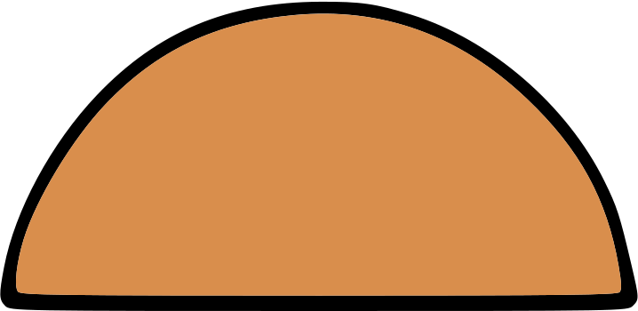 | 蓝 | 面包 | /t/ | tʰ | ||
| T | T | T | T | V013 𓍿 |
 |
绿 | 绳 | /tʃ/ | tʲ或t͡ʃ | ||
| d | d | d | d | D046 𓂧 |
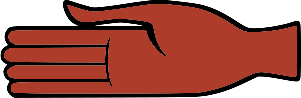 | 红 | 手 | /d/ | tʼ | ||
| D | D | D | D | I010 𓆓 |
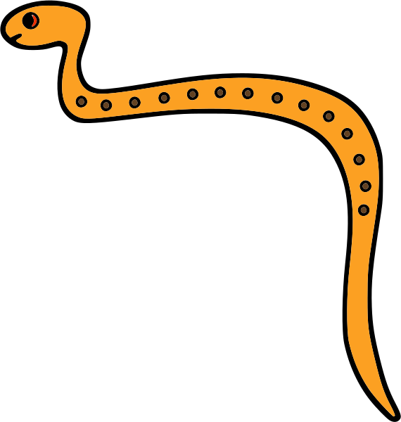 | 黄 | 眼镜蛇 | /dʒ/ | tʲʼ或t͡ʃʼ | ||
| M | M | M | M | AA015 𓐝 |
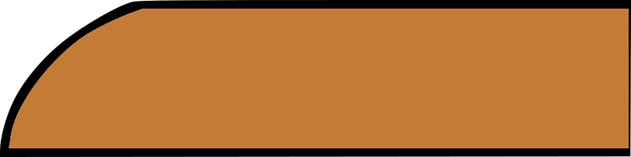 | 蓝 | 手指 | /m/ | 双音字母「ı͗m」 | ||
| N | N | N | N | S003 𓋔 |
 |
红 | 下埃及王冠 | /n/ | 表意「nt」 | ||
| R | R | R | R | D026 𓂐 |
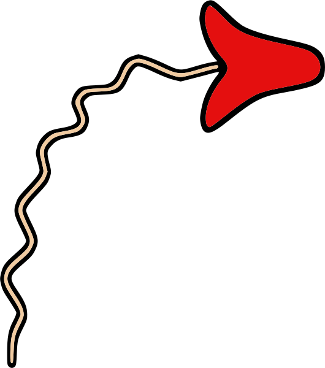 | 红 | 张嘴呕吐 | /r/ | |||
| K | K | K | K | S001 𓋑 |
 |
白 | 上埃及王冠 | /k/ | |||
| l | l | l | l | E023 𓃭 |
黄 | 斯芬克斯 | /l/ | ||||
未完待续
八元神
在埃及神话中，“赫麦努”（希腊文ὀγδοάς
，意为“八”）是第三至第六王朝的古王国时期，即公元前2686年公元前2134年，在城邦（科普特语）Ϣⲙⲟⲩⲛⲉⲓⲛ
（希腊语赫尔莫波利斯）供奉的八位元神：

被设置为四对雌雄神，女性神均与蛇有关，都长着蛇头；而男性神均与青蛙有关，都长有青蛙头。事实上，女神的名字仅仅只是男神名的阴性格式：

可对照孤苦伶仃可怜废柴草根文盲矬胖老穷光棍汉精神病仆街写手不入流码农数学渣宅男黑客活雷锋烟枪酒鬼缩卵怂货窝囊废运用科技昌明民智大开的当代字体及浏览器渲染引擎排版如下，一些「合字」成功了，另一些「合字」失败了：
| 男神名 | 圣书体 | 女神名 | 圣书体 | 象征 | 备注 |
|---|---|---|---|---|---|
| 努 （Nu） |
𓏌𓏌𓏌𓇯𓈗𓀭 | 纳乌内特 （Naunet） |
𓏌𓏌𓏌𓇯𓈗𓏏𓆇𓁐 | 自然水或原初水 | Nun |
| 柯奎 （Kekui） |
𓎡𓎡𓏲𓏭𓇰𓀭 | 柯科特 （Keket） |
𓎡𓎡𓇰𓏏𓆇𓁐 | 黑暗 | 柯克（Kek） 𓎡𓎡𓇰 |
| 黑胡 （Ḥeḥu） Huh, Heh, Hah, Hauh, Huah, Hahuh,Hehu |
𓎛𓎛𓅱𓀭 | 黑胡特 （Ḥeḥut） |
𓎛𓎛𓅱𓏏𓆇𓁐 | 永恒不灭或无限空间 | 另有数字符号 𓁨 表示一百万 |
| 凯勒赫 （Qerḥ） Ni, Nenu, Nu Amun |
𓎼𓂋𓎛𓂢𓀭 | 凯勒赫特 （Qerḥet） Ennit, Nenuit, Nunu, Nit Amunet |
𓎼𓂋𓎛𓂢𓏏𓆇𓀭 | 空气或隐蔽或虚无 | Amun 𓇋𓏠𓈖𓁩 Amunet 𓇋𓏠𓈖𓏏𓆇𓆗 |
其中「柯克」就是到处放风带节奏的娱乐至死の色目逗哔炒作的绿皮青蛙卡通形象，各种其它拼写繁多，但是有图文并茂的「柯奎」「柯科特」作为定稿：
他们总是一起代表了四种宇宙开始时的原初、基本状态的概念。在神话中，他们相互作用最终是不平衡的，结果导致一个新物体的产生。当物体打开时，里面出现了火热的太阳-拉（Ra）。经过一段很长时间的间隔后，拉连同另外的神，创造了其它的一切。
九柱神
九柱神（希腊语：Ἐννεάς
，拉丁化：Ennead
，“九”的意思）是在太阳神的崇拜中心赫里奥波里斯（Heliopolis）受到崇拜的九位神祇，是埃及神话中九位最重要的神祇。
| 神名 | 圣书体 | 神职 | 人际关系 | 备注 |
|---|---|---|---|---|
| 阿图姆 （Atum） |
𓏏𓍃𓀭 | 太阳神 | 最高神：拉（Ra） 𓂋𓂝𓇳𓏤𓁛 |
|
| 舒 （Shu） |
𓆄𓅱𓀭 | 风神 | 拉的儿子，与泰芙努特生盖布和努特 | |
| 泰芙努特 （Tefnut） |
𓏏𓆑𓈖𓏏𓆘 | 雨神 | 拉的女儿，舒的妻子 | |
| 盖布 （Geb） |
𓅭𓃀𓀭 | 大地之神 | 与努特生欧西里斯、赛特、伊西斯、奈芙蒂斯 | |
| 努特 （Nut） |
𓏌𓏏𓇯 | 天神 | 盖布的妻子 | |
| 欧西里斯 （Osiris） |
𓊨𓁹𓀭 | 冥王 农业之神 |
||
| 伊西斯 （Isis） |
𓊨𓏏𓆇𓁐 | 死者的守护神 也是生育之神 |
欧西里斯的妻子 | 伊西斯纽结 伊西斯之血 𓎬 “提耶特” |
| 赛特 （Seth） |
𓇓𓏲𓏏𓐍𓃩𓀭 𓋴𓏏𓈙𓊃𓏏𓄡 |
干旱、战争之神 沙漠之神 混乱之神 |
||
| 奈芙蒂斯 （Nephthys） |
𓉠𓏏𓆇 | 死者的守护神 | 赛特的妻子 |


未完待续
后记
未完待续